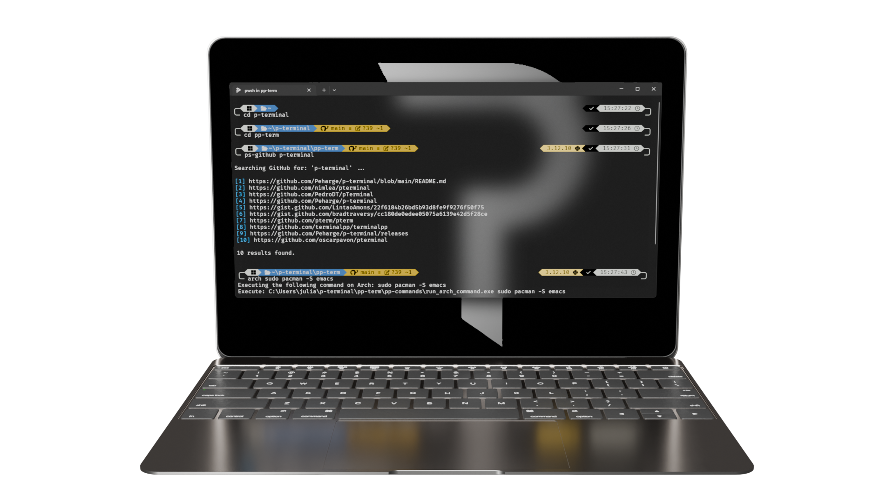

Learn PP-Terminal 5
Why show the standard? The PP Terminal does it all
— but we show you what sets it apart.

PP-Term GitHub
Download PP-Term
PP-Term Commands
Home
Command list
and more
Impressum
P-Terminal License
Security
Contributing
Code of Conduct
Peharge Terminal
Peharge Projects 2025